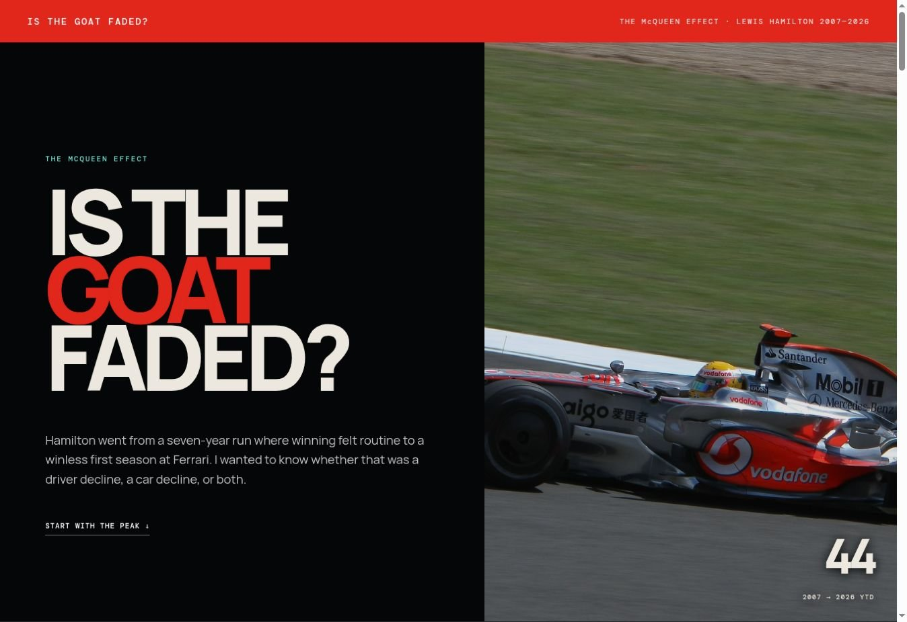
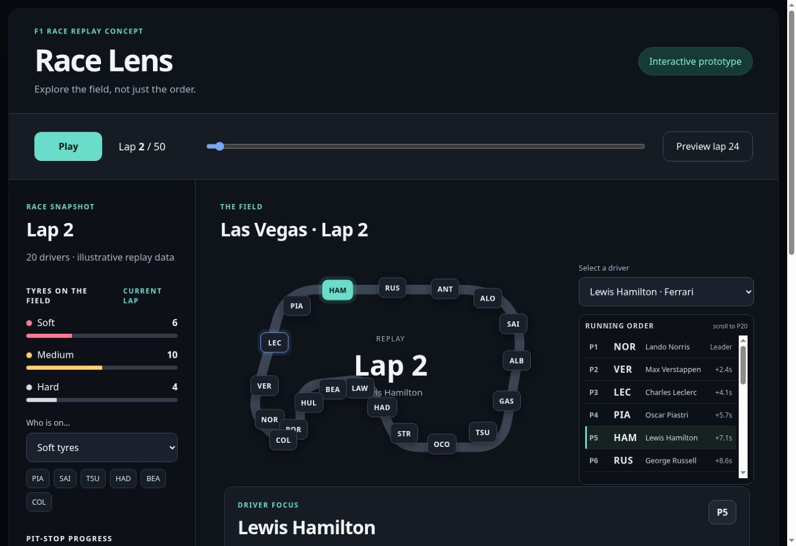
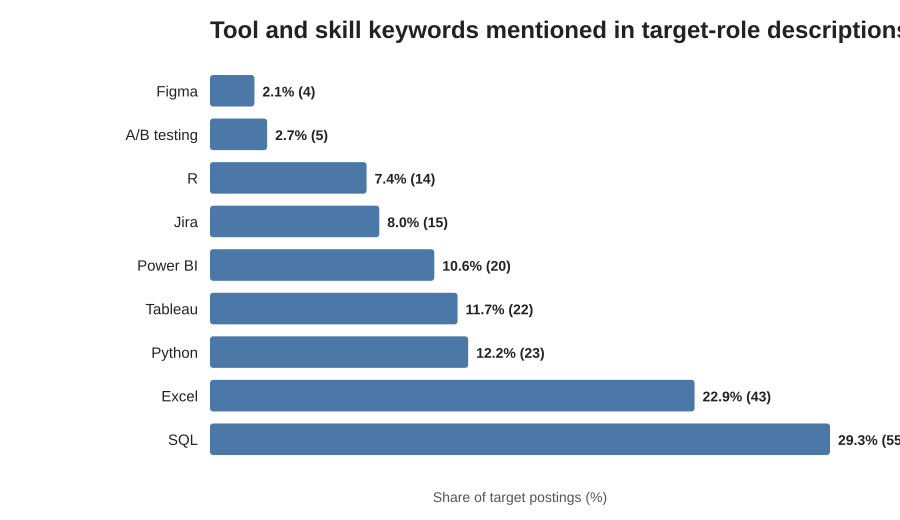
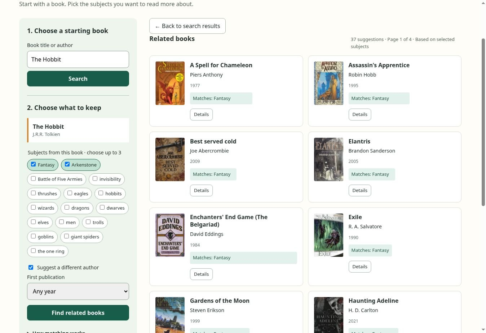
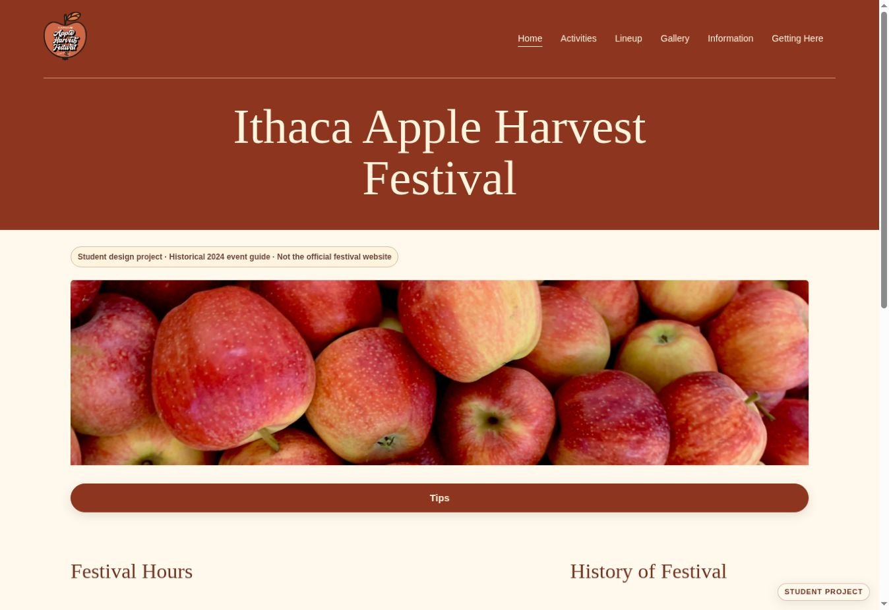

Explore project ↗01
Data analysis · Visualization · Interactive storytelling
The McQueen Effect↗
A closer look at Lewis Hamilton’s career—and the extraordinary baseline behind the decline narrative.
Cornell Information Science · May 2027
Product · Data · Design
& technical execution
I’m Beryl, an Information Science student at Cornell. Most of my projects start with something confusing, inefficient, or interesting that I want to understand. Sometimes that becomes an analysis, sometimes a redesign, and sometimes a product I can build.

Explore project ↗Data analysis · Visualization · Interactive storytelling
A closer look at Lewis Hamilton’s career—and the extraordinary baseline behind the decline narrative.

Explore project ↗Product design · UX research · Interactive prototype
Making an F1 race easier to read, from annotated interfaces to a novice-friendly replay.

Explore project ↗Python · SQL · Relational data · Visualization
What a focused sample of analyst, product and BI postings says about roles, experience and skills.

Explore project ↗Product build · Flask · JavaScript · REST APIs
Book discovery beyond a title search: preferences, readable matches and a place to save the next read.

Explore project ↗Web design · Front-end development
A warm, responsive event guide that connects the festival atmosphere with the details of a visit.
A little about how I work
A confusing race graphic. A book search that misses what I mean. A claim about a driver that feels too simple. Those are the kinds of questions that keep me looking.
Across these projects, I work through the question, the evidence, the design choices and the implementation. I’m interested in product management, product analysis, and roles where data and design help shape what gets built.
Read my résumé ↗